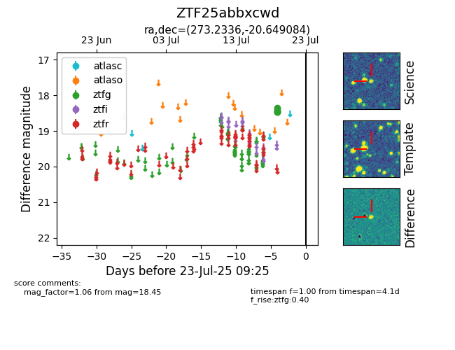

Target ZTF25abbxcwd at 2025-07-23 11:48, see:
FINK: fink-portal.org/ZTF25abbxcwd
Lasair: lasair-ztf.lsst.ac.uk/objects/ZTF25abbxcwd
ALeRCE: alerce.online/object/ZTF25abbxcwd
alt names
ZTF25abbxcwd (ztf,fink)
coordinates:
equatorial (ra, dec) = (273.2336,-20.64908)
galactic (l, b) = (10.2704,-1.23434)
photometry
last ztfg=18.45
6 ztfg detections
